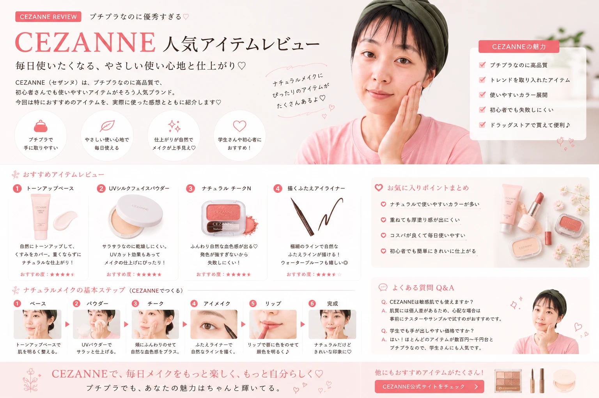

CEZANNE
コスメレビュー
少ない予算でも、
毎日のメイクをもっと楽しみたい。
そんな人にチェックしてほしい
プチプラコスメブランド
「CEZANNE（セザンヌ）」を
初心者目線で紹介します。

CEZANNEってどんなコスメブランド？
CEZANNE（セザンヌ）は、
普段のメイクに取り入れやすい
プチプラコスメを探している人にとって
チェックしやすいブランドのひとつです。
ベースメイクからポイントメイクまで
幅広いアイテムが展開されているため、
メイク初心者が
必要なアイテムを探すときにも
選択肢に入れやすいのが魅力です。

毎日のメイクに取り入れやすいCEZANNEコスメ
プチプラでメイクを始めたい人にも
コスメを一度にたくさん揃えるのではなく、 必要なアイテムから少しずつ メイクを楽しみたい人にとって、 プチプラコスメは取り入れやすい選択肢です。
CEZANNEコスメの魅力をチェック
CEZANNEのコスメを選ぶときは、
価格だけを見るのではなく、
「自分がどんなメイクをしたいのか」
を考えることも大切です。
毎日使いやすいアイテムを探したいのか、
トレンド感のあるメイクを試したいのか。
目的によって
選びたいアイテムも変わってきます。
プチプラで選びやすい
コスメを少しずつ試したい人にも 取り入れやすい価格帯の アイテムをチェックできます。
アイテムの種類が豊富
ベースメイクから ポイントメイクまで、 必要なアイテムを探しやすいのがポイント。
初心者でも試しやすい
まずは気になるアイテムを ひとつ選んで、 自分に合うか試すことができます。
まずチェックしたい4つのカテゴリー
CEZANNEのコスメを探すなら、 まずは大きく4つのカテゴリーに分けて 考えてみると選びやすくなります。
ベースメイク
化粧下地やファンデーションなど。 肌全体の仕上がりを決める ベースアイテムをチェック。
アイメイク
アイシャドウやアイライナーなど、 目元の印象を作る ポイントメイクアイテム。
チーク
血色感や顔全体の印象を 調整したいときに チェックしたいアイテム。
リップ
メイクの仕上げとして 色や質感を楽しめる リップアイテム。

ベースメイクからポイントメイクまで幅広くチェック
初心者がCEZANNEコスメを選ぶときのポイント
プチプラだからという理由だけで選ぶのではなく、 自分のメイクの悩みや目的に合わせて アイテムを選んでみましょう。
何のために使うか決める
「肌を整えたい」 「目元を強調したい」 「血色感を足したい」など、 目的を先に決めると アイテムを選びやすくなります。
仕上がりを考える
ツヤ感のある仕上がり、 マットな仕上がりなど、 自分が好きな質感を 考えてみましょう。
色を確認する
特にファンデーションや コンシーラー、チーク、リップなどは、 自分の肌や普段のメイクに 合わせて色を選びます。
予算を決める
コスメをまとめて購入する場合は、 最初に予算を決めておくと 必要なアイテムを 優先しやすくなります。
最初は「全部買う」必要なし
メイク初心者なら、
いきなり多くのコスメを揃える必要はありません。
今持っているコスメを確認して、
足りないアイテムから
少しずつ追加していくのもおすすめです。
CEZANNEのベースメイクをチェック
Part2では、 CEZANNEのベースメイクを選ぶときの考え方、 化粧下地・ファンデーション・コンシーラーなどを 初心者目線で整理していきます。